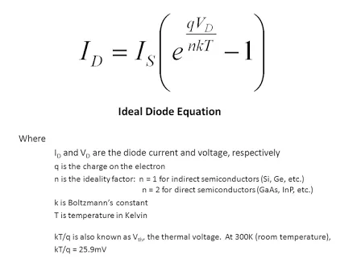

📖 ডায়োড কী?

ডায়োড একটি সেমিকন্ডাক্টর ডিভাইস যা একমুখী বৈদ্যুতিক প্রবাহকে অনুমতি দেয়। এটি প্রধানত রেকটিফায়ার সার্কিট এবং সিগন্যাল ডেমোডুলেশনে ব্যবহৃত হয়।
⚙️ ডায়োডের গঠন
ডায়োড দুটি প্রধান অংশ নিয়ে গঠিত:
- ⚪ **P-Type সেমিকন্ডাক্টর:** পজিটিভ চার্জযুক্ত।
- ⚪ **N-Type সেমিকন্ডাক্টর:** নেগেটিভ চার্জযুক্ত।
🔑 ডায়োডের বৈশিষ্ট্য
- ⚡ একমুখী প্রবাহ প্রদান।
- ⚡ রিভার্স ব্রেকডাউন ভোল্টেজ।
- ⚡ ফরোয়ার্ড ভোল্টেজ ড্রপ।
💡 ডায়োডের প্রয়োগ
- 🔋 রেকটিফায়ার সার্কিট।
- 💻 সিগন্যাল ডেমোডুলেশন।
- 🔦 এলইডি লাইট।
📊 সূত্র
\( I = I_s (e^{V / nV_t} - 1) \)
